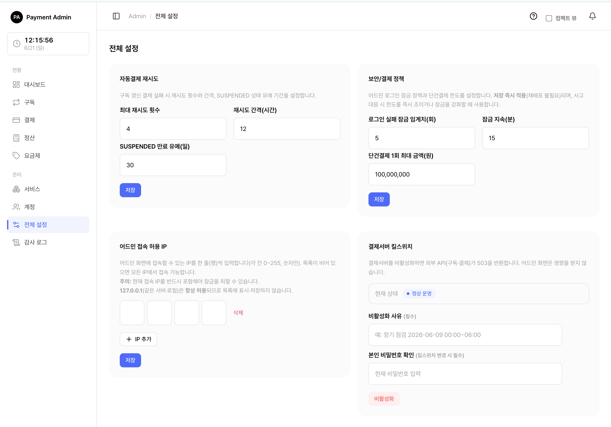

7. 전체 설정
결제 서버 전체에 적용되는 정책을 한 곳에서 관리하는 화면입니다. 좌측 메뉴 전체 설정에서 들어갑니다.
🍎
이 화면에는 네 가지 설정 영역이 있습니다.

7.1 자동결제 재시도 설정
구독 갱신 결제가 실패했을 때, 시스템이 자동으로 몇 번·얼마 간격으로 다시 시도할지 정합니다.
| 항목 | 의미 |
|---|---|
| 최대 재시도 횟수 | 갱신 결제가 실패하면 최대 몇 번까지 다시 시도할지. 0이면 재시도 없음. |
| 재시도 간격(시간) | 한 번 실패한 뒤 다음 시도까지 몇 시간을 기다릴지. (1 이상) |
| SUSPENDED 만료 유예(일) | 모든 재시도를 다 써도 결제가 안 되면 구독이 "정지(SUSPENDED)" 상태가 되는데, 실제 만료까지 며칠을 더 기다려 줄지. 0이면 즉시 만료. |
바꾸는 방법
- 자동결제 재시도 카드에서 세 값을 원하는 숫자로 고칩니다.
- 저장을 누릅니다.
- "저장되었습니다" 완료 창이 뜨면 끝입니다.
💡참고: 바꾼 값은 다음 갱신 처리부터 적용됩니다. 지금 진행 중인 결제에는 소급되지 않습니다.
팁: "유예"는 결제 카드를 잠깐 바꾸거나 잔액을 채울 시간을 고객에게 주는 완충 기간입니다. 너무 0에 가깝게 두면 일시적 문제로도 바로 구독이 끊길 수 있습니다.
7.2 보안 · 결제 정책
로그인 보안과 결제 한도를 정하는 영역입니다.
| 항목 | 의미 |
|---|---|
| 로그인 실패 잠금 임계치 | 비밀번호를 몇 번 틀리면 계정을 잠글지 (기본 5회). |
| 잠금 지속(분) | 잠긴 계정이 자동으로 풀리기까지 몇 분 기다릴지 (기본 15분). |
| 단건결제 최대 금액 | 한 번에 결제할 수 있는 1회성 결제의 최대 금액. 이 금액을 넘는 결제 요청은 거부됩니다. |
바꾸는 방법
- 보안/결제 정책 카드에서 값을 수정합니다.
- 저장을 누릅니다.
💬⚠️ 주의: 단건결제 최대 금액을 너무 낮게 잡으면 정상적인 결제까지 거부될 수 있고, 너무 높게 잡으면 실수·악용으로 큰 금액이 빠져나갈 위험이 있습니다. 서비스의 실제 상품 가격대를 고려해 정하세요.
팁: 로그인 잠금 정책은 무차별 비밀번호 추측 공격을 막아 줍니다. 임계치를 너무 높이면 보안이 약해지고, 너무 낮추면 정상 사용자가 자주 잠길 수 있습니다.
7.3 어드민 접속 허용 IP
관리자 콘솔에 접속할 수 있는 IP 주소를 제한합니다. 지정한 IP에서만 어드민에 들어올 수 있게 만드는 보안 장치입니다.
| 상태 | 의미 |
|---|---|
| 목록이 비어 있음 | 제한 없음 — 모든 IP에서 접속 가능 |
| IP가 한 개 이상 등록됨 | 등록된 IP에서만 접속 가능, 나머지는 차단(403) |
바꾸는 방법
- 어드민 접속 허용 IP 카드에서 IP를 칸마다 입력합니다(예: 4칸에
203 . 0 . 113 . 7). - IP를 더 추가하려면 IP 추가 버튼으로 빈 줄을 만듭니다.
- 지울 IP는 그 줄의 삭제 버튼을 누릅니다.
- 저장을 누릅니다.
💬⚠️ 주의: 지금 접속 중인 본인의 IP를 반드시 목록에 포함해야 합니다. 빠뜨리면 저장하는 순간 본인부터 어드민에서 차단됩니다. 이를 막기 위해 시스템은 본인 IP가 없는 목록의 저장을 거부합니다("현재 접속 IP를 포함해야 잠금을 피할 수 있습니다").
팁: 제한을 완전히 풀고 싶다면 IP를 모두 비우고 저장하세요. 그러면 어디서든 접속할 수 있게 됩니다.
주의: 만약 잘못 저장해 전원이 어드민에 못 들어가게 되면, 데이터베이스에 직접 접근할 수 있는 담당자만 복구할 수 있습니다. 변경 전에 다른 브라우저 탭에서 접속이 되는지 먼저 확인하는 습관을 권장합니다.
7.4 결제서버 킬스위치
비상 상황(점검·장애 등)에서 외부 서비스의 모든 구독·결제 요청을 한 번에 막는 스위치입니다.
| 상태 | 외부 서비스 영향 | 어드민 콘솔 영향 |
|---|---|---|
| 정상 운영 | 구독·결제 API 정상 동작 | 정상 |
| 비활성화(점검 중) | 모든 구독·결제 API가 503 오류로 차단됨 | 영향 없음 (정상 사용 가능) |
🍎쉽게 말하면 "결제 기능 전체를 잠그는 빨간 버튼"입니다. 켜도 어드민 화면은 그대로 쓸 수 있어, 잠근 상태에서 복구 작업을 할 수 있습니다.
비활성화하기 (정상 → 점검 중)
- 결제서버 킬스위치 카드에서 비활성화 사유를 입력합니다(예: "정기 점검 2026-06-20 00:00~06:00"). 이 사유는 외부 서비스가 받는 오류 메시지에 포함될 수 있습니다.
- 본인 비밀번호를 입력합니다.
- 빨간 비활성화 버튼을 누릅니다.
- "결제서버를 비활성화할까요?" 확인 창에서 한 번 더 확인합니다.
다시 켜기 (점검 중 → 정상 복구)
- 본인 비밀번호를 입력합니다. (사유는 입력하지 않아도 됩니다.)
- 파란 활성화(복구) 버튼을 누릅니다.
💬⚠️ 주의: 비활성화하면 외부 서비스의 결제·구독 요청이 즉시 전부 막힙니다. 진행 중이던 결제가 실패할 수 있으니, 가능하면 관련 서비스 담당자에게 점검을 미리 공지한 뒤 진행하세요.
중요: 비활성화·활성화 모두 본인 비밀번호 확인이 필요합니다. 비밀번호가 틀리면 전환되지 않습니다. 비활성화 시에는 사유 입력도 필수입니다.
주의: 복구(활성화)에는 확인 창이 없어 버튼을 누르면 바로 적용됩니다. 반대로 비활성화에는 확인 창이 있습니다.
7.5 한눈에 정리
| 설정 | 켜고 끄는 즉시 효과 | 본인 비밀번호 필요? |
|---|---|---|
| 자동결제 재시도 | 다음 갱신 처리부터 적용 | 아니오 |
| 보안/결제 정책 | 즉시 적용 | 아니오 |
| 어드민 허용 IP | 즉시 적용 (본인 IP 포함 필수) | 아니오 |
| 결제서버 킬스위치 | 즉시 적용 (외부 API 차단/복구) | 예 |
💡참고: 위 설정 변경은 모두 감사 로그에 "누가 · 언제 · 무엇을 어떻게(변경 전 → 변경 후)" 형태로 남습니다.